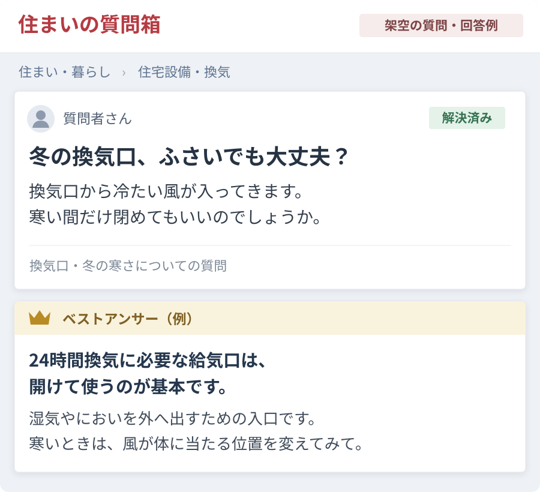
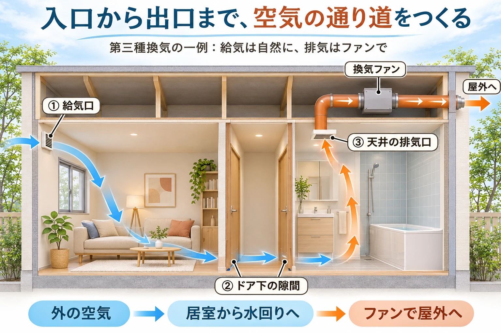
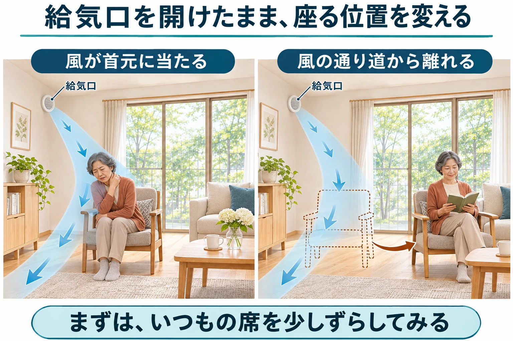
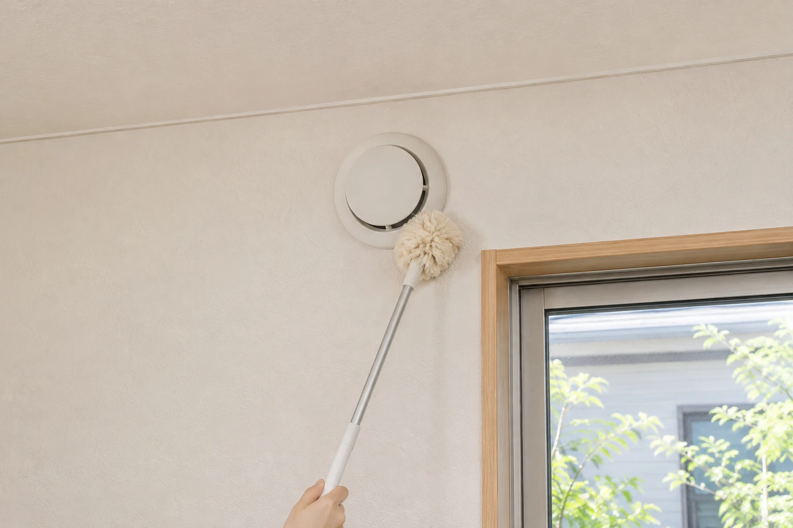

暖房をつけているのに、ソファに座ると首元がスースーする。壁の換気口に手をかざすと、外から冷たい風。「冬の間だけ閉めておこうかな」。そう思ったことはありませんか。
冷気を止めたくなる気持ちは自然なことです。ただ、24時間換気に必要な給気口をふさぐと、湿気やにおい、室内で発生する化学物質を外へ出しにくくなります。なぜ小さな穴が必要なのかを知り、換気を続けながら寒さを和らげる方法を探してみましょう。最後に、給気口とフィルターのお手入れも紹介します。
冬にふさぐと困ることと、寒さ対策・お手入れのコツ
公開日：
 文｜エイスケ（住宅と教育の専門家）
文｜エイスケ（住宅と教育の専門家）

暖房をつけているのに、ソファに座ると首元がスースーする。壁の換気口に手をかざすと、外から冷たい風。「冬の間だけ閉めておこうかな」。そう思ったことはありませんか。
冷気を止めたくなる気持ちは自然なことです。ただ、24時間換気に必要な給気口をふさぐと、湿気やにおい、室内で発生する化学物質を外へ出しにくくなります。なぜ小さな穴が必要なのかを知り、換気を続けながら寒さを和らげる方法を探してみましょう。最後に、給気口とフィルターのお手入れも紹介します。

リビングや寝室の壁にある、丸形や四角形の換気口。外の空気を取り込むものを「給気口」と呼びます。例えば、浴室やトイレなどの換気扇が室内の空気を外へ出すと、それに合わせて給気口から新しい空気が入ります。入口と出口がそろって、家の中に空気の流れができる仕組みです。
換気扇が回っていても、給気口をふさいでいると、必要な量の空気を入れ替えにくくなります。家具やカーテンで給気口を覆ったり、換気経路になっているドア下の隙間をテープで埋めたりすることも、空気の流れを妨げる場合があります。
給気も排気も機械で行う家など、方式は住まいによって異なります。自宅の給気口の場所と「24時間換気」のスイッチを、説明書や管理会社に確認しておくと安心です。

冬は窓を閉め、部屋干しや加湿器を使う機会も増えます。家の中では、人の呼吸や調理などで水蒸気が出ています。外が乾燥していても、換気が足りなければ、室内には湿気や空気の汚れがたまりやすくなります。
| 起こりやすくなること | 暮らしの中では、こんな困りごとに |
|---|---|
| 湿気がこもる | 湿った空気が冷たい窓や壁で冷やされると、結露が生じやすくなります。ぬれた状態が続くことは、カビの原因にもなります。 |
| 化学物質を外へ出しにくくなる | 建材や家具などから発生するホルムアルデヒドなどを、十分に薄めにくくなります。24時間換気には、こうしたシックハウス対策の役割があります。 |
| においや二酸化炭素がたまりやすくなる | 生活臭が抜けにくくなり、人が過ごす間に呼吸で出る二酸化炭素も、換気不足で室内にたまりやすくなります。 |
影響の出方は、家の気密性、換気方式、人数、湿気の出方などで変わります。ただ、空気の汚れは見た目で分かりにくいため、結露やにおいが気になってからではなく、ふだんから換気を続けることが大切です。
「暖房のエアコンを使っているから大丈夫」と思いがちですが、ほとんどのエアコンは室内の空気を暖めて循環させる仕組みです。換気機能付きの一部の機種を除き、外の空気との入れ替えは行いません。
換気が必要でも、座るたびに首元が冷えるのはつらいですよね。まずは給気口を開けたまま、いつもの席や枕の位置を少し変え、寒さが和らぐか試してみてください。給気口の前は空け、人が長く過ごす場所を冷気の流れから外します。

配置を変えにくいときは、給気口や換気設備の説明書を見てみましょう。風向きを変えられるものや、冬向けの運転設定がある機種もあります。開き具合や風量の調整は、説明書で認められた範囲と、自宅の換気計画に合う設定を確認して行います。分からなければ、型番と操作パネルの写真を管理会社や施工店に見てもらいましょう。
テープで密閉する、厚い布を詰める、フィルターを何枚も重ねるといった方法は避けてください。空気の入口を狭めてしまいます。寒さ対策のカバーも、形が合うだけで選ばず、換気量を保てる適合品か確かめることが大切です。
いつもの席だけが寒いのか、部屋全体が冷えるのか。相談するときは、ここを分けて伝えると、必要な対策を絞りやすくなります。
部屋全体と給気口の型番、操作パネルの写真があると、状況を伝えやすくなります。「このソファで過ごすと首元が冷える」「寝るときだけ顔に風が当たる」など、困る場面も添えてみてください。
マンションの外壁や共用の換気経路に関わる工事は、管理規約と申請手続きを確認します。賃貸の設備変更は、貸主・管理会社に相談しましょう。
給気口を開けていても、フィルターにほこりが詰まっていると空気が通りにくくなります。寒さ対策を考える機会に、しばらく見ていなかったフィルターも確かめてみませんか。

フィルターには、水洗いできるものと、水洗いすると機能を損なうものがあります。掃除の頻度や交換時期も製品によって異なるため、使用中のフィルターに合う取扱説明書で確認しましょう。
同じ形の換気口でも、お手入れ方法や交換時期は一律ではありません。説明書の目安をカレンダーに入れ、汚れ具合に応じて早めに確認しましょう。高い場所で姿勢が不安定になるときや、部品の外し方が分からないときは、管理会社や施工店へ頼んでください。
いつもの席で、冷たい風がどこから来るか確かめてみましょう。給気口をふさがずに位置や設定を見直し、次の休日には説明書を手元にフィルターを一つ点検。冬も空気を入れ替えながら、気持ちよく過ごせる部屋へ整えていきましょう。
給気口、排気口、換気扇、フィルター、換気のダクト
部屋・建材・設備から機能を確かめる ↗設備の機能や特徴を調べられます。各製品のリンク先は検索ページです。今使っている設備の取扱説明書は、本体の表示をもとにメーカー公式サイトで探してください。
関連記事
この記事を書いた人｜エイスケ
1986年生まれ。実家の工務店・不動産に10年間従事したのち、教育の世界へ。住宅と教育、両方の視点から「豊かな暮らし」をテーマに執筆します。※本コラムは筆者個人の見解・経験に基づくものです。最終的な判断は各分野の専門家にご相談ください。